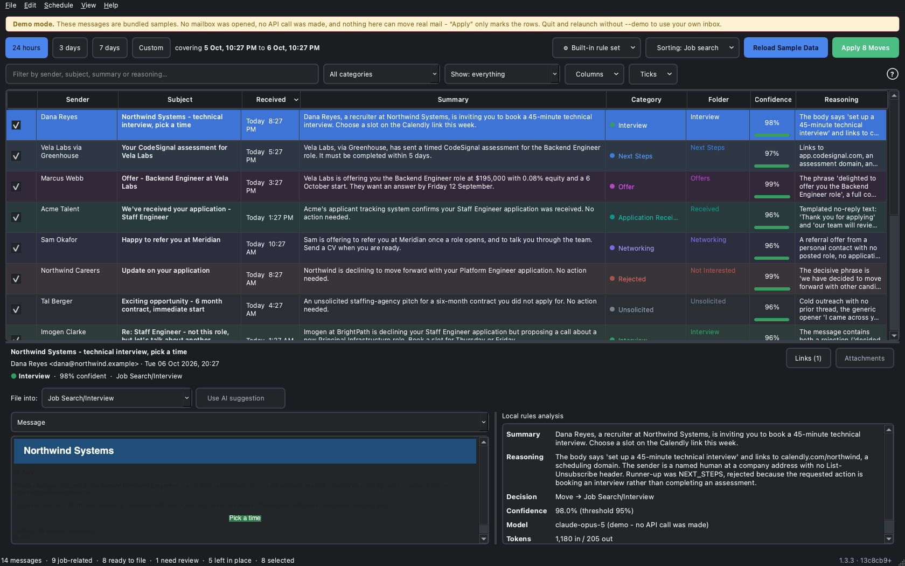

Sorts your mail on your Mac. No account, no API key, and nothing moves until you say.

Mail Manager reads a window of your inbox over IMAP, works out what each message is, and shows a table: a summary, a category, a folder and a confidence score for every row. Tick what you want filed and press Apply.
Job-search mail goes into folders such as Interview, Next Steps, Offers and Not Interested. Everyday mail can be sorted too, or left where it is. Anything it is unsure of goes to Needs Review rather than a guess. Nothing is marked as read, and a filing can be undone.
The built-in sorter is a rule set that runs on your Mac: instant, free, and no message text leaves the machine. On 102 real messages it agreed with a language model on job versus not job 99% of the time, and on the exact category 87%. You can use Claude, Gemini, an OpenAI-compatible service or a local Ollama model instead.
New versions are offered in the app and install in one click.
With the built-in sorter, no message text leaves your Mac. Passwords and keys are kept in the Keychain, and what the app keeps about your mail is encrypted. The details are in SECURITY.md.